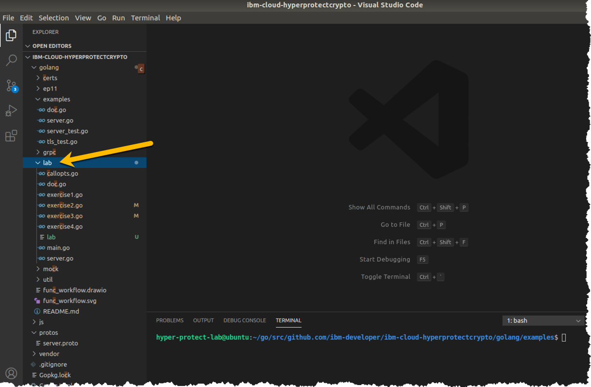

An overview of the exercises¶
Expand the lab folder in your Visual Studio Code explorer pane so that you can see the source code files in the folder, similar to what is shown in the screen snippet below:

Running the go test -v command in the golang/examples directory was good for ensuring that our GREP11 server setup works and that our client application can access it. But there is not a lot of output produced by this test, so we took the functions used in the test and added statements in many places to produce output for educational purposes. We also added some flexibility to the functions by adding some function arguments that would let us modify function behavior, again, for educational purposes.
We left the golang/examples directory intact, and copied the source code into a new directory that we created, golang/lab, and made our program modifications in that directory.
Note
These exercises are meant to illustrate various concepts for learning about the functionality that the GREP11 server and the Crypto Express card in EP11 mode provide, and are not meant to illustrate Go programming lanuage best practices. In fact, we violated one best practice (DRY - Don't Repeat Yourself) when we copied the examples directory into the lab directory!
Feel free to copy our source code and use it as you see fit, but it is provided "as is", without support or warranty of any kind.
Other than adding a whole bunch of statements to print output, at a high level, the following changes in program structure were made after copying the source code from golang/examples into golang/labs
-
The routine to set the variables needed to connect to the GREP11 server was moved into a separate file, callopt.go. This routine specifies the IP address and port where the GREP11 server is listening, and it also contains variables specifying the certificates and keys necessary to establish a session between our program and the GREP11 server using mutual TLS authentication.
Note
The information in the callopt.go file is the type of information that would be provided by an administrator, such as the Hyper Protect Virtual Servers administrator for hostname or IP address and port for connection, and perhaps the same or a different security administrator for the certficates and keys necessary to successfully establish the connection with mutual TLS authentication.
-
A main() function, which is the entry point for the program, was created, in the file main.go. It uses arguments to determine which of the four exercises to invoke. (You can actually invoke any combination of them in one program invocation but in our lab instructions we only have you do one at a time). We added some extra arguments that work with exercises two, three, and four, in order to illustrate concepts of interest.
-
There are four separate source files, exercise1.go, exercise2.go, exercise3.go, and exercise4.go each of which was created by copying one of the Example_ test functions from golang/examples/server_test.go, modifying the name of the function to remove Example_ from its name to reinforce the point that it was no longer a function suitable for using with the go test command.
- exercise1.go began life as Example_getMechanismInfo()
- exercise2.go started out as Example_encryptAndDecrypt()
- exercise3.go was Example_signAndVerifyUsingECDSAKeyPair()
- exercise4.go had its origins as Example_wrapAndUnwrapKey()
-
We deleted some of the files that we copied over that were not needed to run our lab exercises.
It's time to start the first exercise. Enjoy!